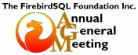

|  |
Adjourned to 3 March 2004, Noon GMT |
| A G E N D A
|
- Open the meeting and roll-call.
- Apologies
- Minutes of the last meeting.
- Matters arising from the Minutes.
- President's report
- Treasurer's report
- Matters arising from the Treasurer's report.
- Plenary proposals
- 2004-SR-01 :: Change name of foundation to "The Firebird Foundation"
- 2004-SR-02 :: Change membership rules to allow associate members in Committee.
- 2004-OR-01 :: Offer a number of Full and Associate memberships to active developers.
- General business
- Election of Officers and new committee
- General proposals for new committee
- Close meeting
|
| Guidelines for conduct of the meeting |
- The meeting can't be declared "open" until we have the Agenda completed.
- All matters MUST be submitted as proposals. A proposal requires a proposer and a seconder: that is, one voting member to formulate and present the proposal and one voting member to second that proposal. Plenary proposals (Agenda item 8) must be sent directly to the Secretary no later than one day before the meeting commences. Please put "AGM PROPOSAL" in the subject.
- Matters of General Business may be sent ahead or sent directly to the Secretary during the meeting, before the chairman calls Agenda item 9. The chairman and members should allow for time differences.
- Election of Officers is the final business of the AGM. All nominations, with proposers and seconders, must reach the Secretary (helebor_at_tpg_dot_com_dot_au) before the AGM is declared open.
|
| During the meeting |
|
| Format of proposals |
A proposal should be in the following format
Title:
A short title summarising the content of the proposal, e.g. Change to membership rule No. x
Proposal:
That ...
This part is the actual wording of the proposal, e.g. "That this Foundation change the rules stated in x.y.z, quote "" to [either] "" [or] "to the effect that...."
Proposer:
Your name
Seconder:
Name of the seconder
Reasons:
Here you can BRIEFLY describe the reasons for your proposal if you think it needs to be clarified.
|
Nominations for Officers and Committee
(greyed out nominations are unconfirmed by nominees) |
Paul Beach
as Committee member |
Nominated by : Helen Borrie
Seconded by: Paul Vinkenoog
|
Helen Borrie
as Public Officer |
Nominated by : Mark O'Donohue
Seconded by: Alexander V Nevsky
|
Nando Dessena
as Committee member |
Nominated by : Alexander V Nevsky
Seconded by: Phil Shrimpton
|
Lucas Franzen
as Committee member |
Nominated by : Thomas Steinmaurer
Seconded by: Paul Vinkenoog
|
Frank Ingermann
as Committee member |
Nominated by : Thomas Steinmaurer
Seconded by: Paul Vinkenoog
|
Holger Klemt
as Committee member |
Nominated by : Alexander V Nevsky
Seconded by: Helen Borrie
|
Dmitry Kouzmenko
as Committee member |
Nominated by : Alexander V Nevsky
Seconded by: Helen Borrie
|
Sean Leyne
as Committee member |
Nominated by : Alexander V Nevsky
Seconded by: Phil Shrimpton
|
Alexander V Nevsky
as Committee member |
Nominated by : Mark O'Donohue
Seconded by: Nando Dessena
|
Mark O'Donohue
as Committee member |
Nominated by : self
Seconded by: Nando Dessena
|
Phil Shrimpton
as Committee member |
Nominated by : Alexander V Nevsky
Seconded by: Paul Vinkenoog
|
Martijn Tonies
as Committee member |
Nominated by : Phil Shrimpton
Seconded by: Mark O'Donohue
|
Paul Vinkenoog
as Committee member |
Nominated by : Thomas Steinmaurer
Seconded by: Phil Shrimpton
|
Jason Wharton
as Treasurer |
Nominated by : Helen Borrie
Seconded by: Mark O'Donohue
|
Geoff Worboys
as President |
Nominated by : Mark O'Donohue
Seconded by: Alexander V Nevsky
|
|
Proposals
|
SPECIAL RESOLUTIONS
- 2004-SR-01 :: Change name of foundation to "The Firebird Foundation"
That rule 1.1 (Definitions: Name), which currently reads:
The name of the association shall be The FirebirdSQL Foundation
(referred to in these rules as "the Association").
shall be changed to:
The name of the association shall be The Firebird Foundation
(referred to in these rules as "the Association").
Proposer: Geoff Worboys
Seconder: Mark O'Donohue
Reasons
The new name is the same as the Firebird product, giving us a stronger
position in case of branding issues. It's also shorter and clearer.
- 2004-SR-02 :: Change membership rules to allow associate members in Committee.
That rule 10.b.ii (under "The Committee: Management by Committee"),
which currently reads:
[ the Committee shall consist of: the Office Bearers (...) and, ]
ii. at least three but no more than eleven other Members, each of
whom shall be a Principal Member according to Rule 3.k hereto
described at the time of calling for nominations and shall be
elected at the Annual General Meeting of the Association.
shall be changed to:
[ the Committee shall consist of: the Office Bearers (...) and, ]
ii. at least three but no more than eleven other members, each of
whom shall be a Member of the Association at the time of calling
for nominations and shall be elected at the Annual General
Meeting of the Association.
Proposer: Mark O'Donohue
Seconder: Paul Vinkenoog
Reasons
Committee membership is not a privilege, but an extra contribution
made in the form of work. Allowing associate members on the Committee
gives these members an opportunity to make that extra contribution,
and may result in a more productive and/or skilled Committee because
of the bigger pool of potential nominees.
ORDINARY RESOLUTIONS
- 2004-OR-01 :: Offer a number of Full and Associate memberships to active developers.
That the Committee, in accordance with Rules 3.k.ii and 3.q, offer a
number of honorary Full and/or Associate memberships to those who
contribute most to the code base. The number may be between 5 and 10
for each type of membership, but this is just an indication; the
ultimate decision as to which developers are offered an honorary
membership shall lie with the Committee.
Proposer: Mark O'Donohue
Seconder: Paul Vinkenoog
Motivation
- Many developers live in countries where the full or even associate
membership fee is simply not affordable; at the same time the value
of the work they do for the project often far exceeds this sum,
even when the grants some of them receive are taken into account.
- Getting a number of active developers on board will make the
Foundation richer and more representative of the Firebird
community as a whole.
|